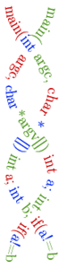
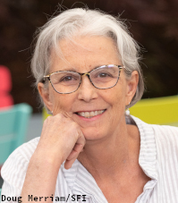

Home Page

 Stephanie Forrest works at Arizona State University, where she directs the Biodesign Center for Biocomputation, Security and Society, and she is a Professor in the School of Computing and Augmented Intelligence (SCAI). Prior to joining ASU, she was Regents Distinguished Professor of Computer Science at the University of New Mexico in Albuquerque and served as Dept. Chair 2006-2011. Professor Forrest was educated at St. John's College (B.A.), and The University of Michigan (M.S. and Ph.D. in Computer Science). She is currently a member of the External Faculty at the Santa Fe Institute, and served as Co-chair of its Science Board (2010-2013) and as Interim Vice President (1999-2000). She spent 2013-2014 as a Jefferson Science Fellow at the U.S. Dept. of State and is currently a board member of the Computing Research Association and Chairs its Government Affairs Committee.
Forrest's research studies the biology of computation and the computation of biology, including work on computational immunology, computer security, automated software repair, evolutionary computation, and biological modeling. Some of her awards include: SFI Stanislaw Ulam Memorial Lectures (2013), UNM Annual Research Lecture (2012), ACM/AAAI Allen Newell Award (2011), the Presidential Young Investigator Award (1991). She is a Fellow of the IEEE.
Some interviews, public talks, and general audience articles are available here.
Here are some recent paper awards: 2020 IEEE Security and Privacy Symposium Test of Time Award for this paper; 2019 ICSE Most Influential Paper Award (highest impact paper published in ICSE 2009) for this paper; 2019 ACM/SIGEVO Impact Award (highest impact paper published in GECCO 2009) for this paper; 2019 SEAMS 2019 Best Paper Award for this paper.
Here are the 2013 Santa Fe Institute Ulam Lectures, on Complexity and the Biology of Computation, which she delivered Sept. 10, 11, 12, 2013.
A somewhat up-to-date Curriculum Vitae is available here.
Email to: steph@asu.edu.
Current projects result from the generous support of the National Science Foundation, Defense Advanced Research Projects Agency (DARPA), Air Force Research Laboratory, and the The Santa Fe Institute.
Office Locations
Biodesign Bldg. B, 120A Brickyard Engineering, Rm. 394480-727-0492 Office hours Spring 2018
Mon. 2:00 - 3:00 (Brickyard)
Thu. 10:30 - 11:30 (Biodesign)
Mailing Address
Biodesign InstituteArizona State University
P.O. Box 877801
Tempe AZ 85287-7801